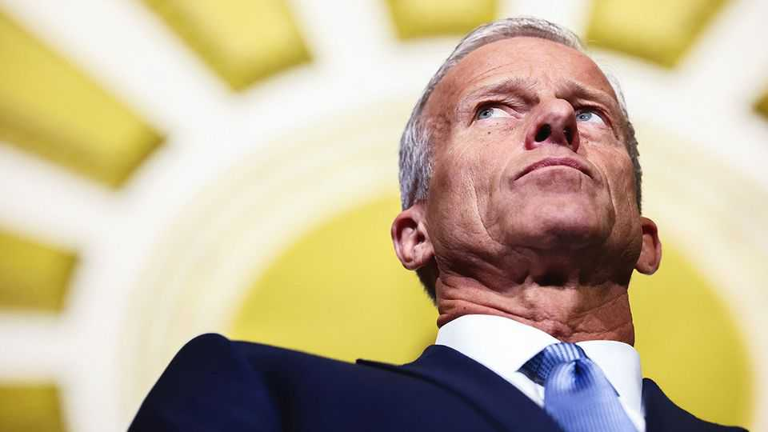

The Senate has become an annoyance to Donald Trump
Ahead of an August recess, Republican senators have not advanced the president’s agenda

Aug 6th 2026
Was it a concession or a con? On August 2nd Todd Blanche, Donald Trump’s pick for attorney-general, produced written assurance that the Department of Justice was scrapping the president’s $1.8bn “anti-weaponisation” fund, a condition that Republican senators John Cornyn of Texas and Thom Tillis of North Carolina had set for backing him. The Senate’s judiciary committee duly advanced Mr Blanche’s nomination two days later. Democrats criticised the move as hollow, given that Mr Trump can still revive the slush fund in future. But to some Republicans, it was evidence that the Senate can still check the president’s worst instincts.
Congress remains largely pliant to Mr Trump. But a small band of Republican senators are increasingly defiant. Some, such as Mr Tillis and Mr Cornyn, are on their way out, so have little to lose and are picking more fights. Susan Collins of Maine, another senator resisting Mr Trump, faces a Democratic challenger in November. Presiding over this is John Thune (pictured), the Senate majority leader who has the blessing of not facing re-election until 2028 and the curse of trying to lead the chamber with Mr Trump in the White House. When senators break for a five-week recess on August 7th, they will have produced few wins for the president. The Democrats “can’t believe how lucky they got with this Senate leadership”, Mr Trump vented last month on Truth Social. “Remember, stupidity always brings LOSING & DEATH!”
Mr Thune has framed his reluctance to advance Mr Trump’s agenda this summer less as a matter of policy than one of procedure. He has told the president that the SAVE America Act, a voter-identification bill, lacks the 60 votes needed to overcome a filibuster. Mr Trump’s fix—that Republicans do away with the filibuster—is a non-starter for the institutionalist Mr Thune. “The Republicans are not getting rid of the legislative filibuster,” he said in July. “It’s just a fact, and the facts don’t change.”
Mr Thune is also loth to use the budgetary tool known as reconciliation as a workaround. The Senate would need only a simple majority to pass parts of the SAVE Act using reconciliation, but the process is meant primarily for spending measures. That procedural reason is matched by a political one: reconciliation would force vulnerable lawmakers to make contentious votes right before the midterms. Senate Republicans “have no intention of putting skin in the game on Trump’s behalf”, explains a Republican operative.
In private, many senators say they appreciate Mr Thune acting as a shock absorber. Though the president has questioned his viability, he maintains the backing of much of his conference. Two Trump loyalists, Mike Lee of Utah and Rick Scott of Florida, tried and failed to buck Mr Thune by keeping the Senate in session to pass the SAVE Act.
The composition of that conference is due to change, however. “The Senate will become more Trumpy, ideologically,” predicts Matthew Glassman of Georgetown University. The seats occupied by Mr Tillis and Mr Cornyn will next year be held either by Democrats or MAGA newcomers. Two other Republicans leaving the Senate, Bill Cassidy of Louisiana and Mitch McConnell of Kentucky, will almost certainly be succeeded by acolytes of Mr Trump. In Louisiana Julia Letlow was personally recruited by the president, while Kentucky’s Andy Barr has vowed “to stand with President Trump 100%”.
As the Senate’s MAGA wing gains greater influence, Mr Thune’s job will get even more difficult. Mr Lee, for example, looks set to be the top Republican on the judiciary committee next year. Trump-aligned senators may begin to press Mr Thune to push through controversial nominees or support Mr Blanche if he moves to re-establish the slush fund, as Republican strategists murmur that he will. New Republican senators may even move to abolish the filibuster. Should Democrats win control of the Senate, Mr Thune’s power will be diminished. He may find some solace in having strident anti-Trumpers on the left to give him cover.■
Stay on top of American politics with The US in brief, our daily newsletter with fast analysis of the most important political news, and Checks and Balance, a weekly note that examines the state of American democracy and the issues that matter to voters.